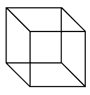
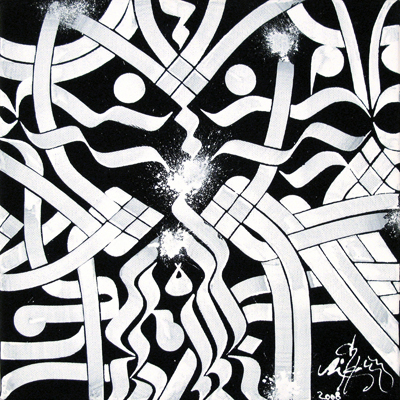
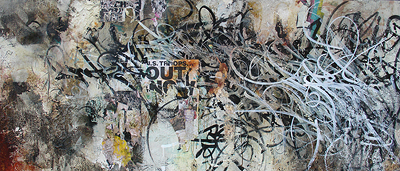

Resetting Theory
The State of Information
Michael Betancourt
Preface
A concern with paradoxes is one of the hallmarks of the twentieth century. The transformation from a deterministic, clockwork universe in the nineteenth century to the probabilistic one of quantum physics marks a radical shift not only in the thinking about the physical world, but in how that thinking is modeled, conceptualized, and interpreted. Similar foundational changes spread through other disciplines as well: mathematics and psychology produced theories of paradox that resemble the way those in quantum physics describe our interpretation-encounters with the world around us. The interpretative model these fields present is one in which contingency and variability are inherent properties of reality and certainty is replaced by uncertainty and a probability set; the traditional, singular truth becomes one truth among many. However, it is important to acknowledge that the results of this paradoxical interpretive model are not relativistic in the typical sense employed in the non-specialist's claim that "truth is relative"; any confusion about this apparent "relativity" is resolved through a more detailed consideration of the paradoxical interpretive model. Conceptualizing the state of information suggests an epistemology not based on certainty.
The emergent conceptual space produced by fields such as physics, math, and psychology, has not only enabled the development of modern digital computers, the internet, networked communication, but has transformed all aspects of our society. This model suggests that social, political, and cultural meaning proceed from, in a sense are secondary effects derived from, a larger conceptual space that can be called the "state of information." Culturally produced meanings, precisely because they are interpretative effects of how we use information, depend on creating relationships within that "information space"; however, the state of information has a recursive relationship with these relationships--once created, they enter into that information space as further elaborations of the information space itself; they are easily (and often) confused with the information space. Nevertheless, the concept of this information space does pose questions about the state of information and its relationship to cultural theory. While these secondary meanings and the space they describe are linked in a recursive, totalizing formulation, they are also entirely an abstraction that serves a descriptive or intellectual purpose. The space should not be reified; the state of information becomes problematic precisely at the moment it is reified, as in the digital aspiration towards that state.
Understanding the state of information's abstract space proceeds from four concepts that occupy central positions in their fields: uncertainty, superposition, schizophrenia, and seriality. The first three describe different aspects of what can be considered a singular phenomenon (the emergence of paradox), while the final term identifies the ground for the figure that is paradox itself: multiple emergent, equally valid yet exclusive potentials within a delimited framework. Considering this figure-ground relationship has been an ongoing concern for a variety of distinct fields of empirical study. These considerations suggest an epistemological framework that requires inconsistency, inconsistency that is also implicit in the interpretative implications of Gödel's Theorem and in John Holland's concept of "complex adaptive systems." Understanding the state of information requires an explanation of how these four concepts interlock, since each term describes a specific aspect of how the state of information emerges from empirical observations; nevertheless, the state of information is an abstract construct that is most apparent in the concept of the digital itself.
By attempting to literalize information as instrumentality, the digital aspires to become the physical manifestation of a state of information beyond all considerations of validity, empirical reality, or dialectical opposition: an equivalency reified in the idea of information-as-data. It emerges naturally from this idea. The suggestion that the digital transcends physical form through its replacement of physicality with meaning embodied in that (denied) physicality is the aura of information in action. The aspiration to achieve the state of information as immanent instrumentality is fundamental to this would-be transcendence; it also becomes apparent in the attempts to create what mathematicians term "completeness," inherent in the various ways the digital is deployed in security.[1] The digital aspiration towards the state of information is a direct effect of the immateriality assigned to the digital. The reification of the state of information in digital technology is a consequence of the immortality of digital information. The perpetual accumulation of digital information in databases produces the illusion that it is possible for this information collection to create the type of completeness only possible in the abstract framework of the state of information itself.
The aura of information reveals itself via the digital as a mystification that strips physical reality from consciousness. This transformation happens because the state of information suggests that all interpretations are equivalent--even contradictory, mutually exclusive, or empirically false ones--because there is no distinction between interpretation and information. This understanding relates to Ludwig Wittgenstein's comments about the empirical tests familiar from scientific procedures:
"An empirical proposition can be tested" (we say). But how? and through what? What counts as its test?--"But is this an adequate test? And, if so, must it not be recognizable as such in logic?"--As if giving grounds did not come to an end sometime. But the end is not an ungrounded presupposition: it is an ungrounded way of acting.[2]
Given the framework of these questions, the a priori "forms of life" that inform both question and test become the grounding for the answer and provide the range of possible solutions. However, to ask the question that addresses that grounding, "What is it that provides the basis for that ground?," is to open up an infinite regression. It is a question that cannot be resolved without the assertion of an arbitrary factor--the forms of life. Such frameworks for thought emerge precisely because there is an assumption of sequence (as in the logical syllogism), while the state of information does not present sequence, but rather presents multiplicity and continuity that deny logical sequence (the state of information is alinear rather than nonlinear). Jean Baudrillard intuited this implicit feature of the uncertainty of quantum physics in Impossible Exchange:
The uncertainty of the world lies in the fact that it has no equivalent anywhere; it cannot be exchanged for anything. The uncertainty of thought lies in the fact that it cannot be exchanged either for truth or reality. [. . .] The uncertainty principle, which states that it is impossible to calculate the speed of a particle and its position simultaneously, is not confined to physics. [. . . ] Uncertainty has seeped into all areas of life. And this is not a product of the complexity of parameters (we can always cope with that); it is a definitive uncertainty linked to the irreconcilable character of the data.[3]
Baudrillard is discussing, without naming or developing it, the empirical basis for the concept of superposition. The paradox which lies at the heart of the state of information proceeds from a different situation entirely than the one Wittgenstein investigates, and it is one which is not capable of producing answers and certainty--one in which the reality that information/interpretation describes is a feature of that information, rather than an independent value. This distinction of information from reality is the reason that the digital aspires to the state of information: this state, in reified form, appears as a superstructure beyond the concerns of physicality; denial of the physical is the defining feature of the aura of the digital.
1. Paradoxes of Interpretation
Central to understanding the state of information (and the triad of uncertainty, superposition, and schizophrenia), is the issue of paradox. When typically encountered, a paradox is a symptom of interpretative failure; paradox is understood as a point of logical/axiomatic incorrectness--a direct demonstration of inconsistency in a logical system. Mathematician Douglas Hofstadter explains the difference between consistency and inconsistency in his book on paradoxes, Gödel, Escher, Bach:
[L]et us now say exactly what is meant by consistency of a formal system ... that every theorem, when interpreted, becomes a true statement. And we will say that inconsistency occurs when there is at least one false statement among the interpreted theorems.[4]
All parts of a formal (logical) system must be true for that system to be a valid interpretative construction; inconsistency means that the system is faulty and paradox means that there is a flaw in the construction of the entire system. While interpretation as a general concept is not identical to the constructed formal systems of logic (such as mathematics), the formal systems Hofstadter describes are a specialized subset of interpretations. Axioms and theorems are rigorously defined versions of past experience and future expectations; their role in a formal system is to render the information needed to construct the system (and any interpretations within that system) explicit. Inconsistent results demonstrate an inherent failure of interpretation; their resolution requires some type of external modification to resolve the incompatibility. Often this change comes from an empirical test against observable reality; however, inherent in resolving the paradox is a method for locating and improving interpretations. The inconsistency can also be understood as a liminal point of instability where multiple, equally valid interpretations converge--a nexus where alternatives coexist at the same time and with equal validity. It is this recognition of paradox as a nodal point that creates the state of information. Paradoxes define the indeterminate points of collision and overlap between different interpretations; the state of information is a construct that emerges from the ways these nodes can be related to one another in a probabilistic space. Quantum physics calls this indeterminate state of overlapping, mutually exclusive (yet valid) interpretations "superposition."
2. Superposition
In quantum physics the concept of superposition was developed because of an inconsistency between the formal, deterministic predictions of physics and the empirical results of experimentally testing those predictions. It is a term that describes an apparent, fundamental paradox of physical reality. Physicist David Albert explains that superposition is a paradoxical incompatibility of interpretation and observation. Knowing one observed value precludes being able to identify another:
We find that we can't ever put ourselves in a position to say, "The color of this electron is such-and-such and its hardness is now such-and-such." It isn't that our color and hardness [tests] are built (somehow) crudely... It's that any electron's even having any definite color apparently entails that it's neither hard nor soft, nor both, nor neither, and that any electron's even having any definite hardness entails that it's neither black nor white nor both nor neither.[5]
Albert's observation is that one value, color, is apparently incompatible with the other value--only one of these values can exist at any given moment. It is not that the tests are flawed, nor is it that the phenomena examined act inconsistently; there is something else happening that appears to defy our expectations of a single, consistent result. The solution to this paradox is to describe our predictions as equally valid yet incompatible sets of probabilities--to abandon singular, absolute results. Viewing interpretation as ranges of potentials is a key feature of the state of information. The expression of any single interpretation is as one within a range (or set of distinct ranges) in which all interpretations are valid. Nevertheless, only one interpretation is immanent at any given moment. As Albert explains, "The rules for predicting the outcome of a measurement of (say) the hardness of a white electron turn out (if so far as we're now able to determine) to be probabilistic rules rather than deterministic ones."[6] In order to accommodate the paradox of superposition, quantum mechanics has been forced to describe the world based on probability. This kind of interpretation presents opposed potentials as equally possible; instead of there being a contradiction in this description, the extremes become liminal positions of mutual exclusion. This is a solution that does not solve the problem; it makes inconsistency into part of the rules. The variability defined by ranges of equally valid potential interpretations produces an information space that collectively defines the interpretant. The state of information derives from the full range of superposed potentials that identify the extremes of this information space.
Instead of being deterministic and singular, the state of information (following the model suggested by superposition), defines interpretations as multiple, overlapping, mutually exclusive, and explicitly contradictory. The state of information is a network or spectrum of possibilities, rather than monolithic. It is the existence of the range of potentials that is the guarantee of validity (i.e. all interpretations are valid, their validity being a function of presence within the larger range of equally valid potentials), even though only one particular interpretation will be empirically observable at any given time. The likelihood of empirical observation is simply another dimension of this multidimensional space. The state of information, while an abstraction, thus implies a specific type of (in)completeness unbounded from human knowledge in the same way that all the members in the set of rational numbers, while immanently describable, cannot be enumerated individually. This interpretative framework generates infinite regression at the same time as it is logically bounded. That the state of information originates within physically immanent observations and empirically describable processes does not negate its inherent nature as a construction. It is necessary to acknowledge that the state of information lies outside the frameworks of human conceptualization except indirectly; the process of naming "the state of information" creates the illusion that such a state is comprehensible, that it can be conceptualized; it is problematic precisely because it exceeds our conceptual capacity in the same way that the infinite does.
3. The Necker Cube
The visually ambiguous figure shown below is an optical illusion called a "Necker Cube," named after the nineteenth century Swiss crystallographer who discovered it, Louis Albert Necker. Necker noticed that salt crystals appeared to reverse their orientations when viewed with a microscope.[7] Optical illusions provide a direct way to consider the interaction between different, incompatible (superposed) interpretations,[8] and the choices that determine which interpretation we see at any given moment.

The indeterminate orientation of the salt crystals Necker observed is recreated in this optical illusion by a network of lines that we interpret as a cube oscillating between an up and down orientation. It presents two possible orientations using the same set of potentials. The interpretation of the Necker Cube's orientation we make depends on how we interpret the relationship of the constituent lines. Our understanding of the cube's orientation suggests a feedback loop between our visual perception and our interpretation of the figure's orientation;[9] interpretations and perceptions dynamically interact to resolve the visually ambiguous figure into one orientation or another.
The lines of the Necker Cube gain their meaning as a cube only from the relationship we choose for them, a decision that happens so easily and immediately that we may not be aware of making it. It is determined by our mental arrangement of the elements spatially, using our past experiences as a guide. Our visual interpretation of this figure remains constant only so long as the arrangement that we consider most probable remains constant. However, how we interpret this cube is a dynamic process of examination and engagement; when the interpretation of which orientation is most likely changes, the form correspondingly shifts, demonstrating that this figure's orientation is superposed between two distinct, yet incompatible, orientations. This figure, like all optical illusions, allows us to encounter the variable space of the state of information directly. Changes in our initial interpretations are what cause these visual shifts. These transformations are evidence for a superposition resolving into a particular outcome.[10] The multiple interpretations of this singular figure reveals the contingent and interactively-determined nature of our selections from the range of potential interpretations.
Interpretive shifts suggest there are discrete, interactive levels to interpretation. The movement from one interpretation to another in optical illusions is a function of these different levels of interpretation checking against perceptions and failing to match what is being perceived as sense data. Depending on how the image is understood to be oriented, all other levels of interpretation are shaped by the expectations it establishes. However, as the Necker Cube shows, our sense perceptions are inconsistent and fully determined by our initial assessments of what we encounter. Our apparent (immanent) experience of the world is only one possibility, a potential understanding that undergoes constant comparison to new perceptions. The state of information is a construction for identifying this abstract realm of (un)realized possibilities.
4. Inconsistency and Paradox
Ernest Nagel and James R. Newman explain the foundation and form of Gödel's Inconsistency Theorem in their book Gödel's Proof. Their discussion demonstrates Gödel's claim that all systems of rules (axioms) will produce inconsistencies in the form of paradoxes that cannot be resolved. In epistemological terms, Gödel shows that formalized knowledge derived from logic is, in itself, an inconsistent, tentative proposition:
Gödel showed (i) how to construct an arithmetical formula G that represents the meta-mathematical statement: 'The formula G is not demonstrable.' This formula G thus ostensibly says of itself that it is not demonstrable. ... But (ii) Gödel also showed that G is demonstrable if, and only if, its formal negation ~ G is demonstrable.[11]
The appearance of an infinite logical regression--a series of repeating logical contradictions whose resolution simply shifts the focus of the contradiction--happens precisely because the formula "G" is inconsistent. In the formal system of logic, Gödel's Theorem is both correct and invalid at the same moment: it is a true statement of logic that simultaneously cannot be true; its validity exists in superposition. Inconsistency is a defining feature in paradoxes of interpretation. Gödel's formula follows the rules for the logical system of symbolic mathematics, but by following the rules he shows that the system of mathematics is inconsistent:
Gödel's paper is proof of the impossibility of demonstrating certain postulates ... The traditional belief that the axioms of geometry (or, for that matter, the axioms of any discipline) can be established by their apparent self-evidence was thus radically undermined. ... For it became evident that mathematics is simply the discipline par excellence that draws the conclusions logically implied by any given set of axioms or postulates.[12]
In general terms, Gödel demonstrates that the set of assumptions which provides the foundation for logical certainty has an arbitrary basis. This demonstration has consequences for justifying all interpretations since it identifies a fundamental failure of logical procedure: any set of rules can produce paradoxes in the form of unresolvable loops. Regression is the problem posed by questioning Wittgenstein's forms of life, and it shows that Gödel's demonstration extends beyond mathematics and formal logic, a point raised by Nagel and Newman in their introduction. Inconsistency is a fundamental component of our interpretations generally, although it only becomes apparent through a process of interpretative engagement or in atypical situations in which ambiguity dominates and singular interpretations reveal themselves as contingent.
5. Schizophrenia
Schizophrenia is clinically described as a cognitive disease that develops from a mental state of superposition that psychologists call "ambivalence."[13] In his original description of schizophrenia, Eugen Bleuler concluded that its basis is a pathological ambivalence that exaggerates typical situations into a conflict resembling superposition, a type of mental paradox:
(1) Ambitendency, which sets free with every tendency a counter-tendency.
(2) Ambivalency, which gives to the same idea two contrary feeling tones and invests the same thought simultaneously with a positive and a negative character.[14]
These definitions repeat the inconsistency identified by Gödel; while the human mind is not a formal system like mathematics, it is the source of such systems. The demand that the world be ordered within a specific, a priori interpretative framework is schizophrenic; all interpretations have a schizoid component. The pathological varieties of schizophrenia emerge precisely because of a dysfunctional response to these superposed potentials.
Psychologist Mark Garrison views the indeterminate character of the ambiguous as the cause of schizophrenia; the difference between pathological and "normal" thought processes arises from the way that the ambiguity of superposition is handled by the interpreting mind; the kinds of variability Garrison's model requires are coincident with those proposed in quantum physics by the concept of superposition. In schizophrenia, ambiguity polarizes into ambivalence (superposition), blocking normal solutions. Garrison's retheorization of schizophrenia proposes a model for understanding how the mind solves the problems posed by superposition through opposition--the autonomous generation of negated interpretations:
Opposition solves not only ambivalence but also indecision, forcing an either/or decision or no decision at all. Ambivalence occludes multiple alternatives, ambiguity, and multiple meanings (polyvalence), forcing a dominating tension of opposites. Ambivalence--pathologized--both shrinks the world into oppositions and prevents (blocks) movement through it.[15]
Faced with an array of equal potentials, the tendency to collapse variability into ambivalence is a method to force an interpretative selection. What makes schizophrenia different from normal thinking is not that the opposition is unresolved, it is that schizophrenia presents a pathological inability to cope with multiple (superposed) potentials or alternatives. A normal resolution is one that remains within the established parameters of Wittgenstein's forms of life. Garrison notes:
The psyche must cope with the configuration of ambiguous fragmented experience into contrary tendencies and oppositions, and it must find its way through the maze of resemblances it makes from these ambiguities. Overlay this myth-making process with the various demands from the environment for singular, rational actions--the myth of continuity and the fantasy of singularity--and the potential for ambivalence is great indeed.[16]
This theory of consciousness has an element of essentialism to it, mediated by its limitations. It is not an account that proposes a complete explanation; instead, what Garrison advances is the thesis that the conditions of a superposed, uncertain reality--both in the physical and interpretative senses (i.e. the state of information)--has produced a set of coping mechanisms for dealing with the inconsistency of our interpretations.
There are two kinds of ambivalence acting on interpretation in this model of schizophrenia. The first is a natural feature of the physical world that all interpretations must address on multiple levels--not simply that of physical sense-data, but on subsequent elaborations of that sense-data into the lived experience we have in encountering reality. This ambivalence is inherent to the universe and exists independent of the observer. The second kind of ambivalence develops in the mind of the observer as a means of checking the interpretations of the ambivalent environment; both function in interpretation as a means of resolving superposed potentials through recourse to empirical observation and past experience. Mathematician John Holland's interdisciplinary "complex adaptive system" (CAS) models these past experiences as a bucket brigade that assumes successful interpretations will make future interpretations based on them more likely to be successful. Holland's CAS model builds on past success as a way to help ensure future success--the past acts as reference for the future. This procedure enables us to make sense of the world around us by using our past experience to shape future interpretations. The interpretative process that is pathological in schizophrenics begins with the same basic set of perceptual cues and processes that constrain and direct all other interpretations, even those more complex than simple perception.
All interpretations are necessarily subject to schizophrenia since they function as divisions and limitations of interpretative possibility a priori; Wittgenstein's forms of life describe these successful past experiences. They provide an apparent commonality for our ability to communicate about the world around us. Pathological ambivalence suggests the development of an unresolvable inconsistency that forces the mind to adopt other solutions than what normal minds employ. This possibility is consistent with Bleuler's observations of schizophrenia as a disease defined by symptoms with no apparent psychological cause[17]; the description of the schizophrenic pathology, which is a failure of adaptive interpretation, is distinct from that state's physiological basis in the mind. The schizophrenic mind chooses a potential response that is not as likely as those chosen by normal minds; this is a direct result of blocking created by unresolved ambivalence.
6. Seriality
The approach to interpretation suggested by the concept of superposition, and elaborated through consideration of the Necker Cube and Gödel's Theorem, creates a framework for understanding interpretation that is indeterminate; single interpretations resemble nodes in a network of intersecting probability scales--positions within a series of possibilities. The state of information emerges as a necessary abstraction produced by this approach.
The nodal approach to interpretation is an extension and elaboration of certain implications noted in my article "Serial Form as Entertainment and Interpretative Framework: Probability and the 'Black Box' of Past Experience."[18] By employing Holland's CAS model as a means of resolving the logical black box of past experience in Umberto Eco's theory of serial form, the nodal model for interpretation emerges from the relationship between past experience and the immanent decision to chose one potential interpretation instead of another; the state of information is a logical consequence of this model.
6.1 The Concept of the Serial
Umberto Eco's conception of "serial" means, first and foremost, that the audience for the serial recognizes and acknowledges the ways the audience's knowledge is required to interpret a specific episode in a serial.[19] It is a reciprocal connection between immanence and remembrance; it implies a model for interpretation that is centrally focused on the interpreter actively working to resolve indeterminate potentials--precisely those situations identified by the concept of superposition. The spectator's interpretations employ frameworks created through previous encounters with similar types to anticipate and recognize divergences from established norms.[20] Selecting one interpretation from within a set of potential interpretations, a choice that is subject to later interpretative reversals, produces contradictions and oscillations between equally likely interpretations (as in the Necker Cube). It is the provisional nature of this interpretative choice that is significant; an expanded field of potential interpretations is produced when the possibility of interpretative inconsistency is admitted into the framework as a limiting factor that describes those positions of greatest incompatibility. This interpretative construct generates an expanded field of potential, valid interpretations.
6.2 The Complex Adaptive Systems Model
The inconsistency superposition represents provides the mechanism for adaptation in John Holland's CAS model. His description uses natural selection to choose the "best-working" example from a group of potential solutions.[21] Best-working interpretations meet the needs of the interpreter who is encountering and examining an environment. The interpretative demands are constrained by the feedback loop which produces them, generating new interpretations based on earlier successes:
Evolution "remembers" combinations of building blocks [adaptive strategies] that increase fitness. The building blocks that recur generation after generation are those that have survived in the contexts in which they have been tested.[22]
If we can, assume some kind of plausibility for the newly generated rules: they should not be obviously wrong when viewed in light of past experience. In most cases, plausibility arises from the use of tested building blocks. ... the building blocks at one level are combined to form the building blocks at the next level.[23]
Inconsistency is essential to this process; the ability to allow inconsistencies to exist simultaneously and to evaluate those inconsistencies for relative degrees of success is a logical necessity in this structure. This process requires ranking interpretations based on their fit to the situation. When modified by Eco's serial framework, these interpretations become ordered, like nodes in a network.
The concept of superposition suggests understanding interpretation as a probability set, presenting a range of tentative possibilities rather than a singular, deterministic result. While Holland's CAS does provide a method for addressing superposed potentials, it also tends to lock interpretation into a singular position, making the kinds of interpretative shift that are readily apparent in viewing the Necker Cube a problematic situation. The instant flip of the Cube between one orientation and another implies the coexistence of (at least two) mutually exclusive interpretations that are essentially interchangeable. The serial version of CAS justifies these competing interpretations without necessarily forcing us to choose between them.[24] Both orientations of the Cube are equally valid interpretations, defined and mutually supported as valid potentials by their relationship through variation. The probability set as a whole--the existence of a series of mutually exclusive (and intermediate) interpretations--is the site of validity rather than any singular interpretation. These alternatives do not undermine interpretation; the probability set authorizes alternative potentials at the same moment as any singular interpretation achieves apparent validity. The mutually assured validity of interpretations in the state of information emerges from the extension of superposition and optical illusions to other types of interpretation that are less obviously (apparently) in superposition.
Since it is through encountering and addressing these undecidables that interpretative success emerges, interpretation proceeds by employing inconsistency as a technique--seeking to create superposed potentials rather than avoiding them. Holland's CAS model requires that when there is no obvious contradiction one be created. In psychology, ambivalence is the creation of these contradictions; what emerges from ambivalence as pathological schizophrenia is the quantity, strength, and unresolvable nature of these contradictions. Its specific strengths, when confronting the variability of superposition, is suggestive when we consider the variety of mutually exclusive theories and interpretations that characterize broader fields of thought[25]; at the same time, Gödel's Theorem suggests that the appearance of inconsistencies within any interpretative schema is inevitable. Our ability to accept and evaluate (even employ) multiple, different (even contradictory) interpretations at the same time, suggests an empirical basis for the nodal approach to interpretation.
The role of past experience in interpretation serves to mask the inconsistent aspects of everyday experience. That the world appears neither uncanny nor inconsistent is a necessary result of how Holland's building blocks function; interpretation adopts the most likely potential that is consistent with what has already proven successful. Only in specific situations in which alternate and equally potential interpretations emerge does the underlying superposition visibly appear, as in the Necker Cube and other paradoxes.
6.3 Nodal Interpretation
The nodal view of interpretation identifies any singular, immanent interpretation as chosen from a probability set whose composition is serial--a collection of various, competing interpretations. This view opens possibilities for justifying interpretation in a flexible and open-ended fashion. The nodal model is one in which interpretations are nodes in a multidimensional space of potentials; collectively, these nodes describe the state of information--information space. Because the nodal model appears superficially quantifiable, it implies the potential to become instrumentalized through the application of technology--specifically via the digital. It is precisely the analogy of a nodal (or network) conception of interpretation that suggests the possibility of transition to instrumentality; however, this application is reification.
Describing a process in which expectations can arise, shape interpretation, and then evolve, provides a framework for justifying interpretation generally through recourse to a set of potential interpretations. Conceptualizing interpretation as nodal shifts the emphasis in supporting specific interpretations from an external foundation (immanent empirical correctness) to an internal one. Specific interpretations are justified by/through the existence of alternatives with common features--truth conceptualized as a spectrum of potentials. This process creates a state in which all potentials coexist as information. The momentary superiority of one interpretation does not invalidate the others because a shift to another possibility is always potentially immanent. Like Eco's serial forms, the nodal approach to meaning depends not on individual interpretations but on the relationship between interpretations and the system that creates them (and that they collectively define). The digital's ability to manipulate data leads to the general aspiration to manipulate and contain the information space; this is the aspiration of the digital to the state of information. This aspiration requires a limitation and reification of that space, collapsing its variability into a limited, a priori series of potentials. The illusion that this space, however large, is infinite is the aura of the digital in action.
Nodal interpretations are justified by the concept of mutually assured validity: the validity of one interpretation is established through its relationship to other potential interpretations. In this schema past experience is a method for choosing highly probable interpretations from within the range of potentials. But past experience does not eliminate the potential to shift from one interpretation to another; it is not a source of validity for any single interpretation. The abolition of a dialectical/dualistic basis for interpretation produces the apparent (but superficial) egalitarianism of the state of information in which all interpretations are valid potentials. This is not a relativistic construction because this entire information space exists in superposition; the nodes are abstractions that do not actually exist within that space, but rather are features of our interpretations that fall within the parameters of the space and are therefore useful in conceptualizing their relationships to each other.
Even though the nodal interpretative model proposed here is extremely schematic, it suggests possible strategies for justifying interpretations without precluding their rejection or revision at a later time. The nodal model is a means for selecting individual potentials from within the state of information. It is important to recognize that there is a distinction between the nodal approach to interpretation and the interpretative space that the nodal approach inherently suggests; the state of information is an abstraction implied by, but independent of, the nodal approach itself.
7. Authority / Authorship / Artwork
The instability of the Necker Cube becomes the instability between different levels of scale within a given construction. What we commonly call experience and expertise are forms of learned behavior. Faced with an array of equal potentials, the ambivalent nature of perception forces an interpretative decision; without making an initial choice about relationships and organization, there can be no evolution towards successful interpretations. Semiotician Roland Barthes' observations about the initial interpretative choices are true for all meaning-bearing constructions:
Distance and proximity are promoters of meaning. Is this not the great secret of every vital semantics? Everything proceeds from a spacing out or staggering of articulations. Meaning is born from a combination of non-signifying elements (phonemes, lines); but it does not suffice to combine these elements to a first degree in order to exhaust the creation of meaning: what has been combined forms aggregates which can combine again among themselves a second, a third time.[26]
Barthes is discussing the organization of Mannerist painter Arcimboldo's composite heads but he could just as easily be discussing the paranoiac-critical paintings of Salvador Dalí or the Graphysics of contemporary painter Rostarr. Barthes' observations are also true of how we transform the marks on a page, wall, or screen into letters that become words, which in turn, become sentences, paragraphs, and so on. The scaling-up of organization generates constructions that, when related via successful past experiences, become meaning-bearing. Consider Negative Space Traveler 7 (2008), by New York-based painter Rostarr:

Copyright Rostarr; used with permission.
As we interpret this painting, we create order in the network of lines by deciding on a series of relationships that generate figures;[27] these decisions structure what we see, and are part of the work's significance. The appearance of the figures in these paintings requires an interpretation of abstract lines as representation; the interpretive process mirrors the choices made in interpreting the Necker Cube. These figures are a potential, but equally possible is an apprehension of the image as a network of abstract, overlapping ribbons. Each image remains in superposition until one or another potential becomes a dominant interpretation. Rostarr calls this shift of interpretation "Graphysics"--an explicit acknowledgement of the superposition present in these paintings.[28]
The transformation effected here is a shift between a variety of pure abstractions, familiar from Minimalist paintings by Frank Stella that become a network of faces and anthropomorphic forms. The emergence of form results from specific choices made by the viewer, giving these works a dramatic anthropomorphic character: they invoke an internal, subjective reality whose instability reflects the shifting character of the state of information.
7.1 Past Experience
The crucial factor in these interpretations is successful past experiences--these correspond to the forms of life that Wittgenstein suggests are a priori to any encounter. The success of past experiences is dependent not on the interpreter, or on a particular interpretation, but on the ability of other interpreters to produce similar interpretations when confronted by the same material. Abbott and Costello's Who's on First? demonstrates this problem:
Costello: Well then who's on first?
Abbott: Yes.
Costello: I mean the fellow's name.
Abbott: Who.
Costello: The guy on first.
Abbott: Who.
Costello: The first baseman.
Abbott: Who.
Costello: The guy playing...
Abbott: Who is on first!
Costello: I'm asking you who's on first.
Abbott: That's the man's name.
Costello: That's whose name?
Abbott: Yes.
Costello: Well go ahead and tell me.
Abbott: That's it.
Costello: That's who?
Abbott: Yes.
This comedy routine depends upon a recognition that "who's" and "whose" sound the same. We laugh at their predicament because we understand how easily it happens, and how frustrating it is when it does. Abbott does not explain the rules of substitution to Costello, and the simple explanation, that the first baseman is named Who, depends on our ability to recognize a shift in function for the word "who." The comedy in this routine is sadistic: it emerges from the semiotic torture of Costello, his inability to recognize the difference between "who's" and "whose," and his rising frustration with Abbott's refusal to answer his question. In reality, they are speaking entirely different languages.
Each of these instances involve a differential between the author and the reader; the staggering of articulations proceeds based on a set of rules which the reader either implicitly deploys in interpreting, or must discover through trial and error in order to render the alternative, declarative meaning of "who's on first." This is a dynamic process of engagement, not a passive one in which the interpreter simply receives the instruction from the author. The process requires the selection of appropriate interpretative engagements in order to arrive at a semblance of meaning.
Tracing the parameters of an interpretation reveals a shifting set of relationships not only between the elements that are being interpreted, but between the author (Abbott) and the reader (Costello). The shifting relationships between elements are a sign-post for the shifting nature of nodal interpretations. It reveals the authorial differential between Abbott, Costello, and the audience, who recognizes the dynamic and are complicit in the comedy being performed.
Our interpretative ability to back up and change our initial assumptions based upon their applicability to a given situation allows us to resolve paradoxes. It is this feedback process that is crucial to Holland's CAS model for adaptation (and interpretation). Language and communication are neither automatically functional nor necessarily unambiguous in meaning. The transition from the state of information to the reality of interpretation depends on how we apply our knowledge of the rules: appearance of meaning is determined by other interpreters' ability to recognize our interpretation--this is the distinction between the abstract state of information and its emergence within any specific interpretation. It is this initial decision that shapes the entire interpretative process that follows. The inability to communicate in Who's on First? results from the inconsistency between normal and specific uses. As the associative procedures of the rhetorical jumps evident in this dialogue demonstrate, superposition is a methodology for rule discovery that provides a means to test, and a technique for expanding, interpretative results.
7.2 Ambivalence
Meanings become pathological when they are unique to a singular interpreter. According to Garrison, the experience of superposition we encounter in Abbott and Costello's routine is an essential component of communication; without it there could not be creative thinking such as poetry or rhetoric. It enables communication of ideas not immediately apparent:
Jung characterized Bleuler's understanding of ambivalence [superposition] as the "fusion of one function with another." ... Rhetoric demonstrates that ambivalence is fundamental to language for it is in rhetoric that all aspects of ambivalence converge. ... In a metaphor taken literally, communication is blocked and meaning cannot move. ... Mediated by recognition and acceptance, it is therapeutic, imaginative, originating and joining. It is a phenomenon crucial to psychological experience.[29]
Rhetorical devices perform the transformation of normal speech into a poetic construction that encourages associative understanding. Persuasion in rhetoric works through the transposition of values without the use of logical structures; this is the effect of superposition collapsing. This transfer occurs because both the speaker and listener agree--implicitly--to accept the superposition of associative speech.
Without the agreement between speakers that meaning will proceed according to specific 'rules,' where the words used have clear roles, we cannot communicate; the interplay that creates the comedy in Who's on First? elides these roles and is both the confusion and the joke (as does the confusion of reality and metaphor Barthes describes below). There is an overlap between Garrison's ambivalence and Barthes' semiotic theory: both suggest a central role for inconsistency in a model of communication and miscommunication. Crucial to Barthes' explanation of his semiotic procedure is the metaphor that is taken literally:
One of the techniques of the poet Cyrano de Bergerac consists in taking a perfectly banal metaphor in the language and exploiting its literal meaning. If the language says "die of grief," Cyrano conceives the story of a condemned man whose executions sing him tunes so lugubrious that he finally dies of grief over his own death.[30]
This narrative is absurd, comic in its implication. It proposes a relationship that recognizably distorts the role of language and the power of metaphor--songs do not kill people, no matter how depressing and sad they may be. Our interpretations perform this jump without thought; it is a tacit agreement based in our past experiences with the rules. This type of agreement is often called "transparent" because we do not become aware of our complicity in accepting its terms or our role in maintaining and deploying these conventions whose purpose is to contain ambiguity so that we can communicate. We are familiar with the rules for this kind of statement and the rhetorical connection it makes; it is this type of shift that the state of information describes.
7.3 Semiotic Disobedience
The concept of "semiotic disobedience," as developed by law professor Sonia K. Katyal,[31] describes the ongoing conflict over intellectual property and is a function of political speech; however, she includes in her framework the
appropriation and occupation of intellectual, tangible, or even bodily property. I call these recent artistic practices examples of "semiotic disobedience" because they often involve the conscious and deliberate re-creation of property through appropriative and expressive acts that consciously risk violating the law that governs intellectual or tangible property. ([from a footnote] This article defines semiotic disobedience to include a number of approaches to visual, actual and verbal representation, including vandalizing, subverting and "recoding" certain kinds of intellectual, real government, and private property for public use and expression.)[32]
The emphasis on physical property in a discussion of intellectual property is only to be expected; however, this emphasis obscures the disruptive functions of recoding, which proceed by enabling superposition to emerge. What these transformations perform is a change of meaning through a systematic shift of rules that results in a changed resolution to the paradox of interpretation. This change reflects a differential between the potentials employed at any given moment and the possibilities contained by the information space.
The systematic reappearance throughout the twentieth century (under new nomenclature) of remix, appropriation, mash-up, montage, and collage--the reassembly and alteration of manufactured materials into new art objects, whatever the name used (Duchampian found objects, commodity sculpture, even the transformation of commonplace objects in Pop)--are all variations on this disruption of conventional engagements. Initially all these actions share a common shift in category from everyday object to artwork; in performing this shift, they violate an established semiotic system of organization in favor of other values that are implicit and valid but unexpressed. Through a shifting of potentials described within the state of information, these changes appear both natural and logical to us in retrospect; however, they all are examples of the superposition implicit in the state of information itself.
Katyal's conception of semiotic disobedience is addressed towards graffiti and other kinds of culture jamming that are deployed directly as political speech but which impose a shift in engagement between audience and object; however, all these depend on the transformation of established meaning and order and its replacement with an alternative. The validity of this transformation is established by the state of information's suspension of validity: interpretation is an ambivalent phenomenon which reveals that the authority of official statements are one political position among others. The superposition emergent in this work is deeply threatening to established orders--both of political domination and political resistance--because it subverts their messaging codes.

Copyright Jose Parlá; used with permission.
Jose Parlá's painting, Temporary Autonomous Zone (2008), is a typical wall-sized painting: covered with swirls of his stylized calligraphy, it includes a single piece of torn and ragged poster stating "US TROOPS OUT NOW," an official statement that dominates the painting. The decay of the poster implies the instability of the political message it conveys as much as the collage is always already an example of semiotic disobedience: this political statement, covering earlier layers and covered by later layers, invokes a superposition of meaning. While explicitly a political statement, it lacks the urgency appropriate to the message conveyed: "NOW" appears to be long past, attenuated. Its specific political message becomes something historical; life moves inexorably on, incorporating both the dominant powers and objections of the dominated into its matrix and visualizing the equivalence of positions identified by the state of information
Parlá's painting superposes the anti-Iraq war protests with pro-war sentiments: ripped, dirty, and worn, the poster becomes a sentiment that is simultaneously demanding and passive. It becomes possible to think of the demand in multiple ways simultaneously: as having failed, succeeded, or even been superseded by more pressing concerns. The transformation from immanent to past leaves the status of its proclamation in doubt; the multiplicity of potentials that results destabilizes all the possible positions that can be held in relation to the poster's statement. Support, denial, and apathy all become merged as equal potentials; each is justified as a valid potential, but also countered by the immanent presence of the alternative: they are an assertion of possibles, of alternative political situations. This paradox is reflected in the ambivalence of the painting's title, Temporary Autonomous Zone; itself a reference to Hakim Bey's book, the issues evoked by the ambiguity in the painting reflect upon its intertextual namesake.
Conclusion
Superposition describes both the paradox and our inability to interpret a solution to the problem it presents by discussing how an observer interprets an experiment. Albert notes that superposition requires that we believe both possibilities simultaneously: "The standard way of thinking about what it means to be in a superposition somehow flatly contradicts what we unmistakably know to be true of our own mental lives."[33] The concept of superposition prepares for a new model of conceptualization. It appears as a means to resolve the contradiction by not resolving it. Instead of finding a way to reject the resulting inconsistency that our interpretations produce, superposition suggests these inconsistencies are the point of the theory; it produces a set of alternatives which suggest that any interpretation will eventually fall victim to its own immanent inconsistencies: Gödel's Theorem shows that all formal systems must be incomplete. The implication of these developments is that reality is in flux, continuously subject to investigation, transformation, and argument.
The variability and limits of interpretation that emerged during the twentieth century in quantum physics and mathematics lead to the emergence of the state of information; they were also preconditions for the invention of contemporary digital computer technology. The apparent naturalness of the interpretative framework that produces the state of information is closely related to the invention of these technologies, their widespread dissemination, and the current cultural aspirations towards the state of information exhibited by the digital generally. The consequences of this approach remain uncertain precisely because it presents an expanded field of interpretation. Although bounded by pairs of mutually exclusive potentials (as most obvious in the Necker Cube's orientations), the epistemology the state of information implicitly creates is not a system built from dialectics or dualities but from a range of potentials that include intermediate and hybrid interpretations. The traditional problematics of a knowledge system based on certainty and particular value dissolves into a nodal conception where these values persist, only as dimensions of the system. The consequences of such a construction exceed the parameters of this essay.
If dialectic thinking is essentially alchemical--a collision of opposing forces that creates a new, superior result--the expanded field of nodal interpretation is essentially superposed: the result is held in suspension awaiting a collapse into the specifics of a singular result (that remains fundamentally transient). At the same time, the expanded field of interpretation is one in which all interpretations--even those later disproved empirically--have validity within the range of potential interpretations as interpretations; this situation clearly describes the state of information. There is no distinction made between the empirical validity and non-validity of an interpretation because both exist within the range of potentials and their empirical validity is just one of the dimensions that define them as nodes within the interpretative range. The consequences of the emergence of the state of information as a conceptual apparatus have been implicitly played out within the realm of technical aspiration, critical application, and through the grappling with the paradoxes of competing and variable valuation within both philosophy and culture generally. The conflict between those espousing a singular, particular 'universal' set of values and those critiquing these claims dovetails with the emergence and ascent to dominance of the conceptual underpinnings of the information space that the state of information abstracts.
Notes
-------------------
[1] Samuel Nunn. "Tell Us What's Going to Happen: Information Feeds to the War on Terror" in CTheory, http://www.ctheory.net/articles.aspx?id=518.
[2] Ludwig Wittgenstein. On Certainty, sec. 580.
[3] Jean Baudrillard. Impossible Exchange, translated by Chris Turner, (New York: Verso, 2000), pp. 3, 19.
[4] Douglas R. Hofstadter. Gödel, Escher, Bach: An Eternal Golden Braid, (New York: Basic Books, 1979,1999), p. 94.
[5] David Z. Albert. Quantum Mechanics and Experience, (Cambridge: Harvard University Press, 1992), p. 15.
[6] Ibid.
[7] Louis Albert Necker. The London & Edinburgh Philosophical Magazine and Journal of Science, 1, 1832, pp. 329-337.
[8] Nancy J. Woolf and Stuart Hameroff. "A Quantum Approach to Visual Consciousness" in Trends in Cognitive Science, Vol. 5, No. 11, November 2001, pp. 472-478.
[9] Wolfgang Einhäuser, Kevan A. C. Martin, and Peter König. "Are switches in perception of the Necker cube related to eye position?," in European Journal of Neuroscience 20, 10, 2004, pp. 2811-2818.
[10] Woolf and Hameroff, p. 477.
[11] Ernest Nagel and James R. Newman. Gödel's Theorem, (New York: New York University Press, 1958, 1986), p. 58.
[12] Ibid., pp. 10-11.
[13] Eugen Bleuler. "Theory of Schizophrenic Negativism," translated by William A. White, Journal of Nervous and Mental Disease, 1950, p. 266.
[14] Ibid.
[15] Mark Garrison. "The Poetics of Ambivalence," in Archetypal Psychiatry, Spring 1982, p. 224.
[16] Ibid., p. 223.
[17] Eugen Bleuler. Dementia Praecox, or the Group of Schizophrenias, (New York: International Universities Press, 1950), pp. 271-286.
[18] Michael Betancourt. "Serial Form as Entertainment and Interpretative Framework: Probability and the 'Black Box' of Past Experience," in Semiotica: Journal of the International Association for Semiotic Studies, issue 157, volumes 1-4, pp. 315-324, 2005.
[19] Umberto Eco. "Interpreting Serials," in The Limits of Interpretation, (Bloomington: University of Indiana Press 1994), pp. 83-100.
[20] Ibid., pp. 91-93.
[21] John Holland. Hidden Order: How Adaptation Builds Complexity, (Reading: Perseus Books, 1995), p. 53.
[22] Ibid., p. 79.
[23] Ibid., pp. 61-76.
[24] Betancourt, pp. 315-324.
[25] Eco, p. 97-98.
[26] Roland Barthes. The Responsibility of Forms, (Berkeley: The University of California Press, 1985), p. 141.
[27] Holland.
[28] Rey Parlá. "Organic Harmonies," in Wreckless Abandon, (Miami: O.H.W.O.W., 2008).
[29] Garrison, pp. 226-229.
[30] Barthes, p. 131.
[31] Sonia K. Katyal. "Semiotic Disobedience," in Washington University Law Review, vol. 84, no. 2, 2006, pp. 489-570.
[32] Ibid., p. 493.
[33] Albert, p. 119.
----------------
Michael Betancourt is a critial theorist, art historian, curator, and multi-disciplinary artist. His essays have been translated into Italian, Spanish, Portuguese, Chinese, and Arabic. He has exhibited his movies, site-specific installations, and non-traditional art forms in unseen, unusual, or public spaces since 1992. His website is www.michaelbetancourt.com
© CTheory. All Rights Reserved